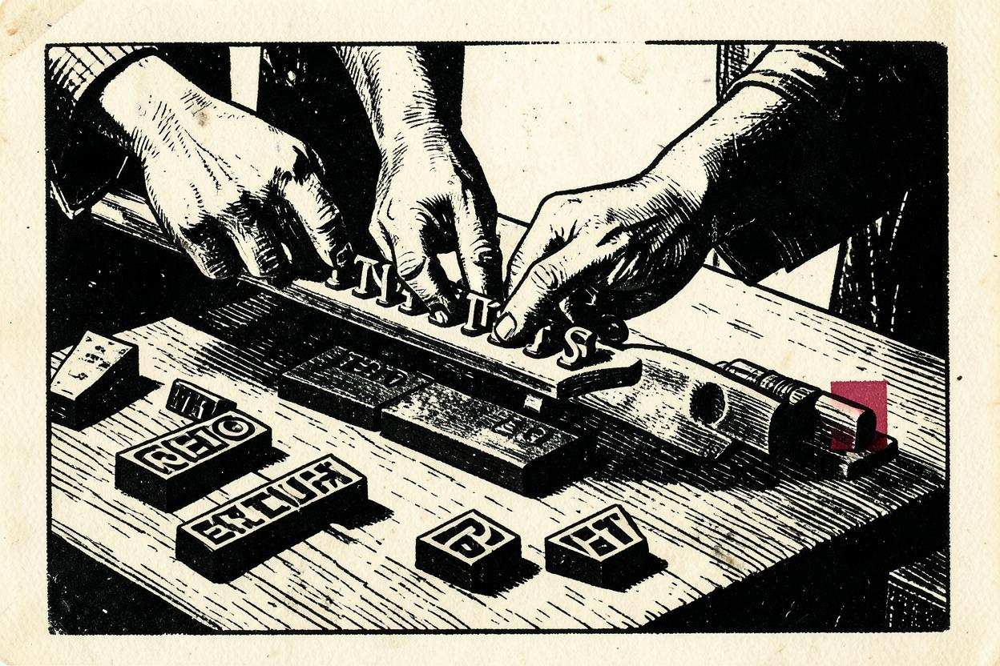

封面故事 / 人物
他给屏幕
留了一点毛边
Ckey 的八年：画界面、写代码，以及学会删掉最后一个动效。

第一次看到他的作品，是一个只有三屏的咖啡品牌站。滚动到一半，烘焙曲线从页面底部长出来，像温度计一样慢慢变红。没有视频，没有三维模型，全是几个数字和一段贝塞尔曲线。
「那天做到凌晨四点。」他说，「不是因为它难，是因为停不下来。」
严格来说，Ckey 不是个容易归类的人。白天做界面，晚上写代码；给客户搭设计系统，给自己写只有 2KB 的噪点库。八年下来，他攒了一堆半成品：一个没上线的字体工具、三个改了七遍的首页、一整套从来没写完的设计规范。
问他怎么判断一个页面「做完了」，他想了一会儿：「当你不再想往上加东西的时候。大部分时候，是删掉最后一个动效的那天。」